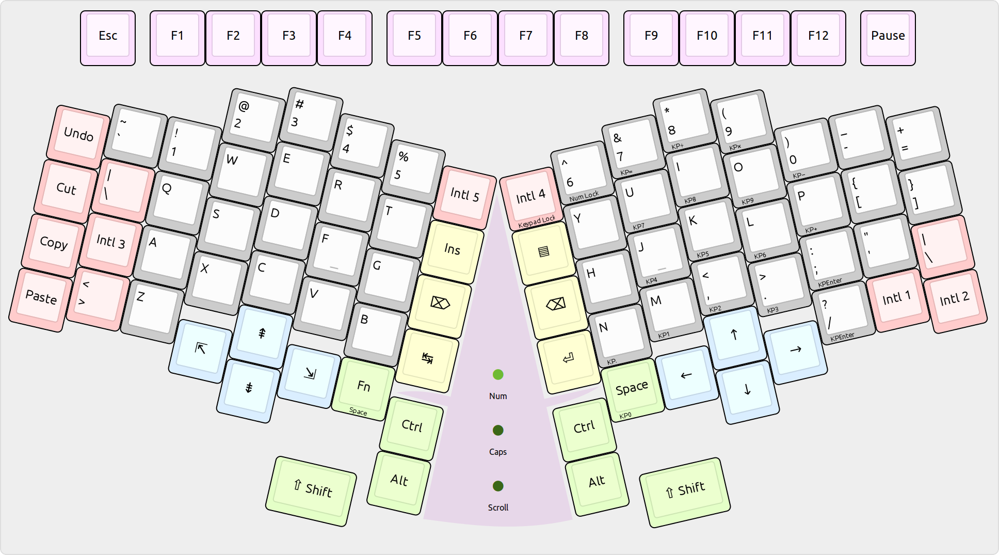

Here is the overall layout of Purple Tentacle, with various key groups highlighted.

On the top edge, you have the classic row of function keys, in groups of four.
The main area is split into two halves, with a fixed 26° angle between them. (This provides the ergonomic advantages of a split keyboard while keeping the case design easy and without having to invent a way to interconnect the halves.)
The layout features navigation keys, arranged in diamond shapes and positioned in the index–middle–ring finger columns. They are easily accessible without moving the wrist.
Each half has three thumb keys and one key for the base of the thumb. The Shift, Ctrl and Alt arrangement makes it possible to press two modifiers simultaneously with one thumb while leaving the other fingers in their home position.
The additional column of keys in the middle, pressed by the index fingers, accommodates the most frequently used editing keys: Backspace, Enter, Tab, Delete, and more rare but still occasionally useful Insert and Menu keys.
Holding down the left Space (Fn) key turns the right half into a keypad. Note that the home row corresponds to digits 4, 5, and 6, the same as on a real keypad. Pressing Fn+Keypad Lock locks this mode, for the rare case when you need to enter a bunch of numbers without needing any letters.
Lastly, there are several spare keys for experimentation. Use these for anything you can think of. Ideas include:
- Any classic keys you need (Print Screen, Scroll Lock, Caps Lock, or Win)
- Undo, Cut, Copy and Paste down the leftmost column
- The ISO backslash key
- Additional input method-specific keys for East Asian languages
- Macros
Actually, thanks to the TMK Keyboard Firmware, all keys are customizable. All of the above is only a recommendation.
The triangular shape in the middle, highlighted in purple, with the green status LEDs, resembles a character from Day of the Tentacle, a 1993 video game. This is what the keyboard is named after. (@Lucasfilm: If you feel this infringes your trademark, please file an issue.)